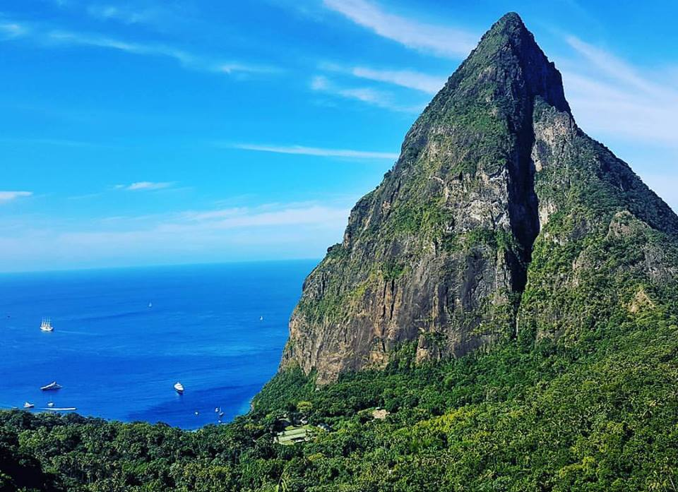
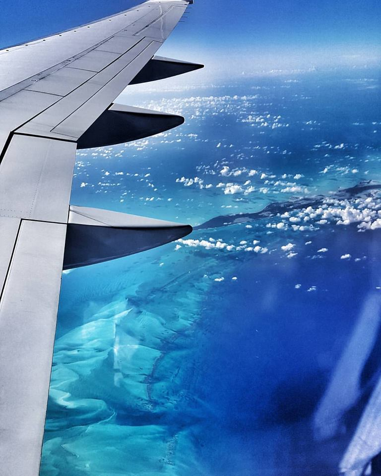
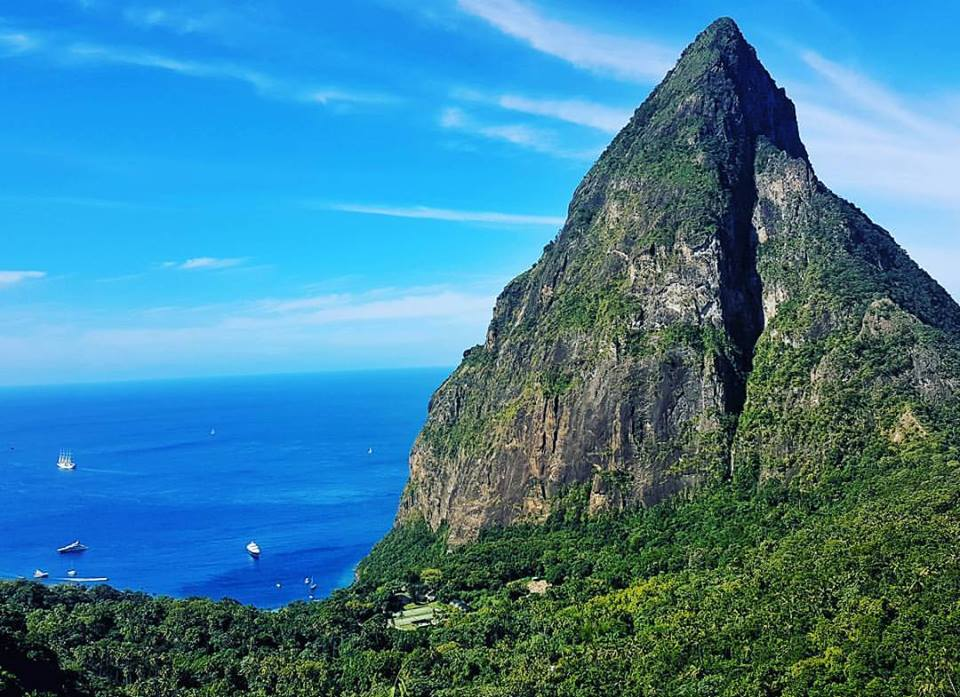
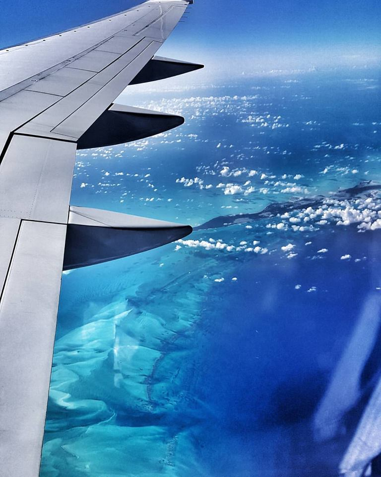
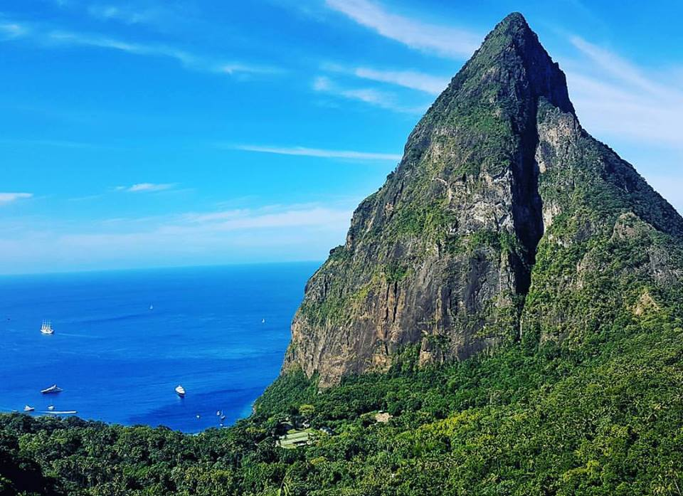
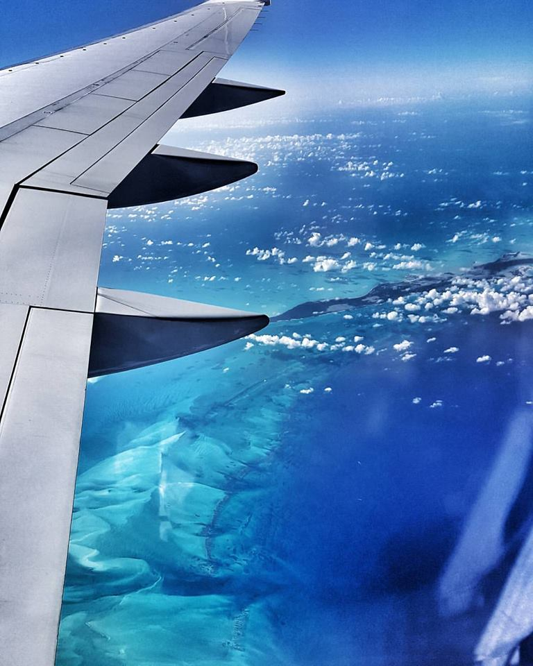
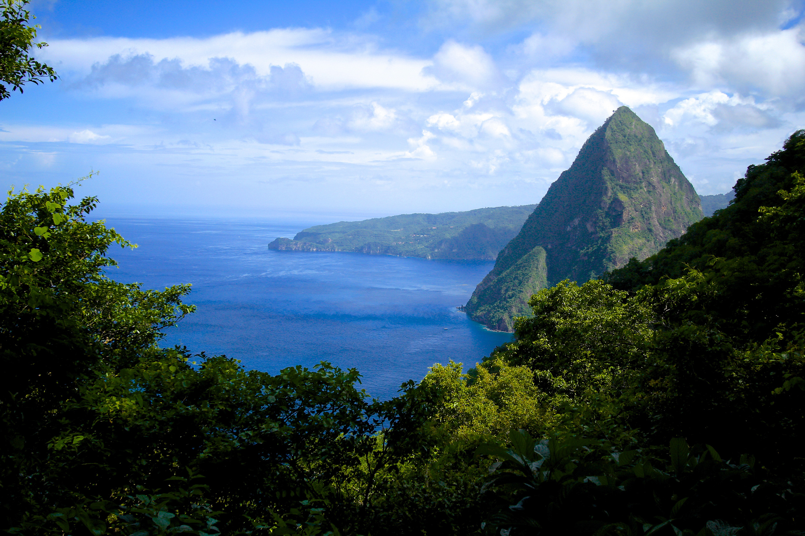
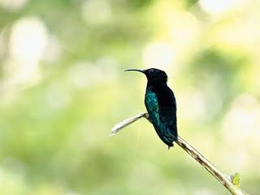
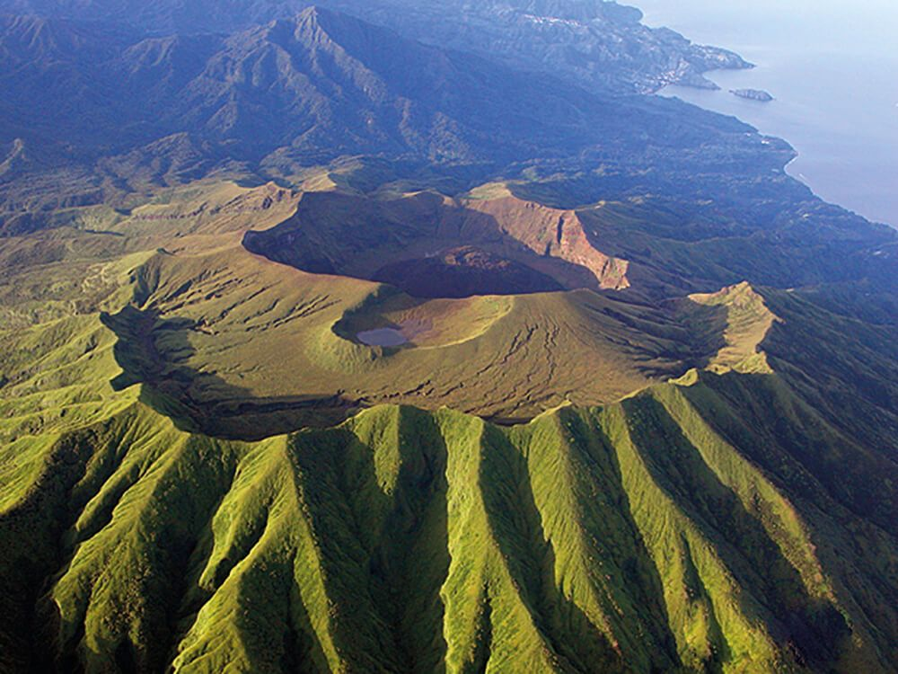

Fairest isle of all the earth! A sensorial experience that will feed your spirit with flavours she has gathered from the earth, the sea and her people. Born of Volcanic origin, the Island of Saint Lucia offers a burst of natural splendour with every turn. She whispers a constellation of emotions spicing up each day with mysterious flavours and will colour your mind with a pallet full of soul. Saint Lucia is the perfect destination. Whether you are adventure seeker, environmentalist, dive enthusiast, a yogi, lovers seeking that ultimate romance experience or in need of a private getaway she will inspire your stories and fill them with joy.


There is a broad array of exciting and exotic activities available on St. Lucia. The island's steep coastlines and lovely reefs offer excellent snorkeling and scuba diving. The rainforest preserves of St. Lucia's mountainous interior are one of the Caribbean's finest locales for hiking and birdwatching. Of course, the island also possesses excellent facilities for golf, tennis, sailing, and a host of other leisure pursuits. Not to be missed is St. Lucia's Soufriere volcano, the world's only drive-in volcanic crater.
  We are happy to help you plan your next trip!